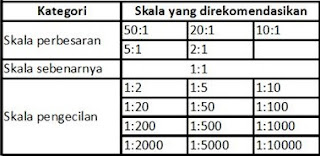

SKALA GAMBAR TEKNIK
Skala gambar teknik mengacu pada
perbandingan antara ukuran objek sebenarnya dengan ukuran gambar
yang digambarkan. Skala ini penting dalam gambar teknik untuk
memastikan akurasi dan konsistensi dalam representasi visual suatu
objek atau struktur.
Skala gambar umumnya dinyatakan dalam
bentuk rasio atau perbandingan. Contohnya, jika skala gambar adalah
1:100, itu berarti setiap satuan panjang dalam gambar setara dengan
100 satuan panjang sebenarnya. Jadi, jika ada sebuah garis yang
panjangnya 1 cm dalam gambar dengan skala 1:100, itu berarti panjang
sebenarnya dari objek tersebut adalah 100 cm. Beberapa skala gambar
umum yang digunakan adalah 1:1, 1:10, 1:50, 1:100, dan sebagainya,
tergantung pada ukuran objek yang digambarkan dan kebutuhan
perancangan atau dokumentasi.
Pemilihan skala gambar harus
mempertimbangkan ruang kertas, keterbacaan, dan level detail yang
diinginkan. Skala yang tepat memungkinkan orang yang melihat gambar
teknik dapat dengan mudah memahami dimensi sebenarnya dari objek
tersebut.
